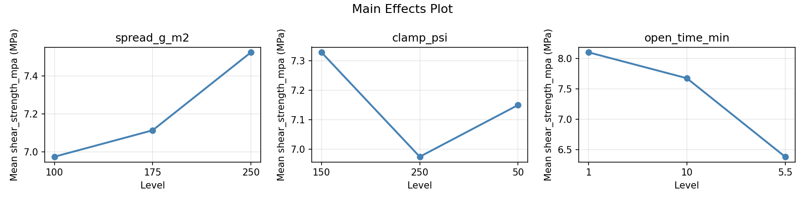
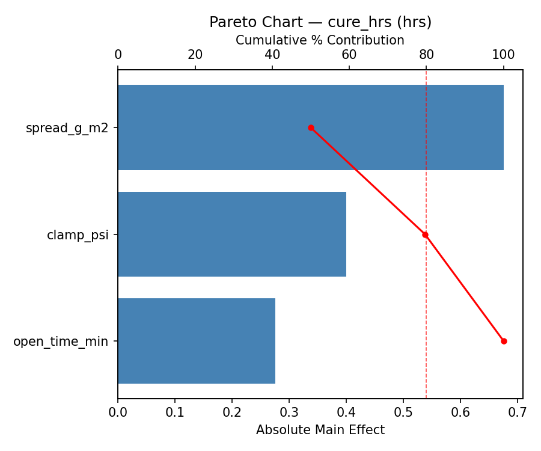
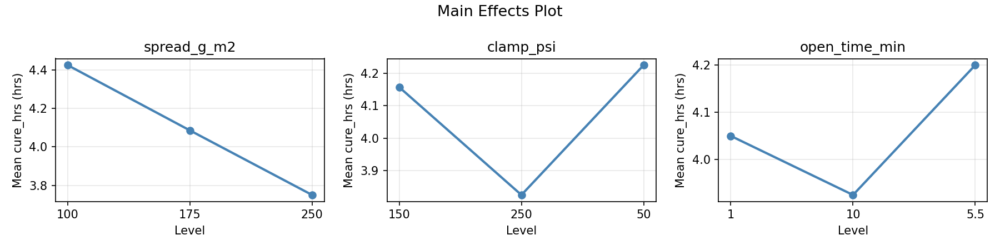
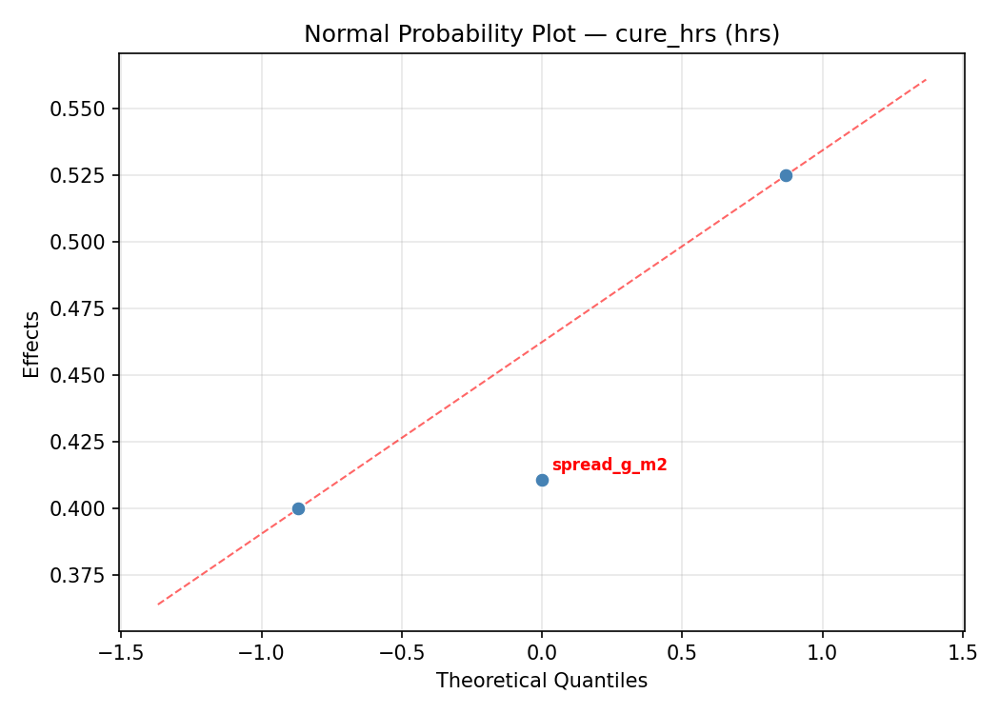
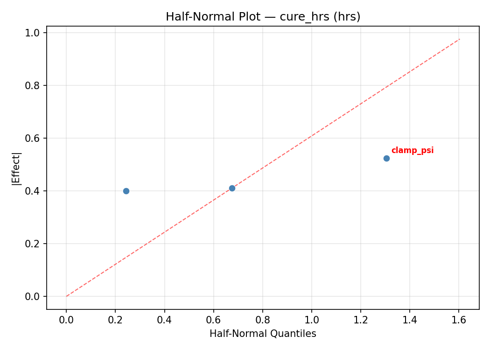
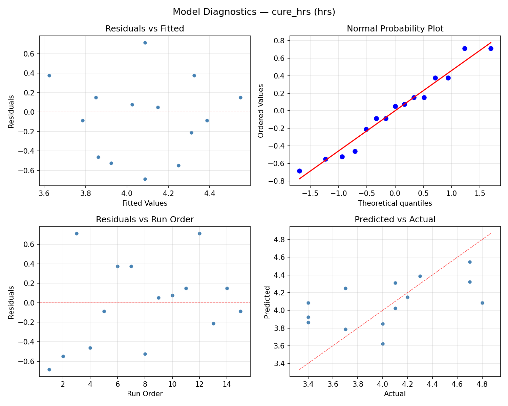
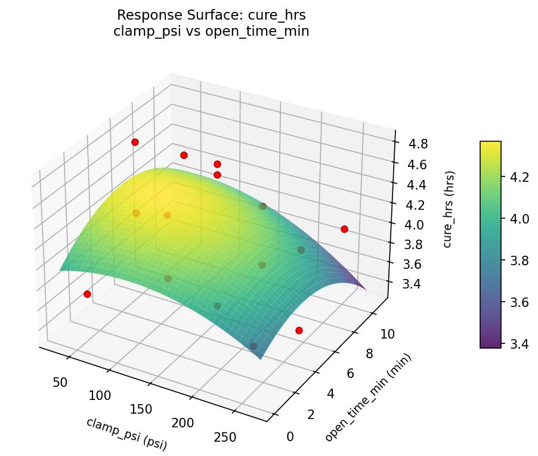
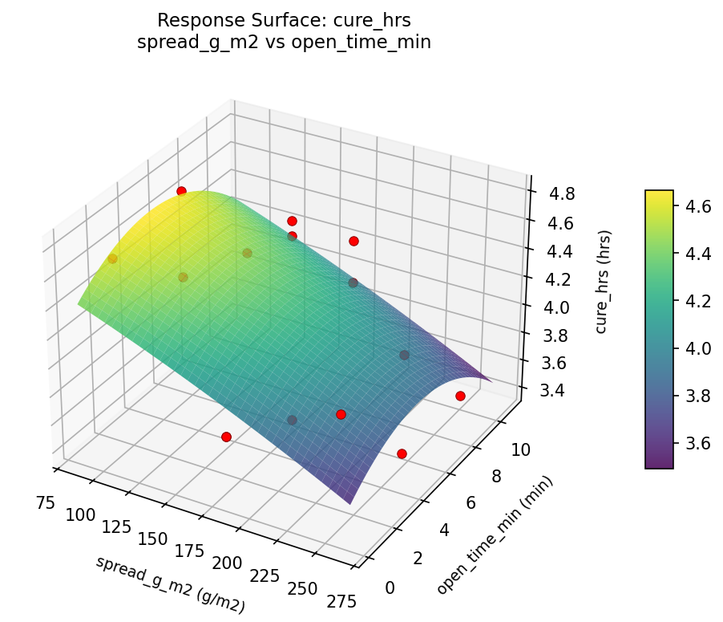
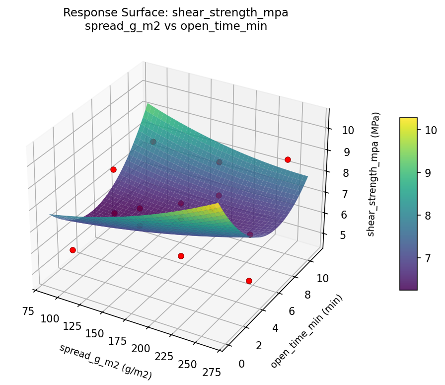

Summary
This experiment investigates wood glue joint strength. Box-Behnken design to maximize joint strength and minimize cure time by tuning glue spread rate, clamping pressure, and open assembly time.
The design varies 3 factors: spread g m2 (g/m2), ranging from 100 to 250, clamp psi (psi), ranging from 50 to 250, and open time min (min), ranging from 1 to 10. The goal is to optimize 2 responses: shear strength mpa (MPa) (maximize) and cure hrs (hrs) (minimize). Fixed conditions held constant across all runs include glue type = PVA, wood = red_oak.
A Box-Behnken design was chosen because it efficiently fits quadratic models with 3 continuous factors while avoiding extreme corner combinations — requiring only 15 runs instead of the 8 needed for a full factorial at two levels.
Quadratic response surface models were fitted to capture potential curvature and factor interactions. The RSM contour plots below visualize how pairs of factors jointly affect each response.
Key Findings
For shear strength mpa, the most influential factors were open time min (68.6%), spread g m2 (18.1%), clamp psi (13.3%). The best observed value was 9.7 (at spread g m2 = 250, clamp psi = 150, open time min = 10).
For cure hrs, the most influential factors were clamp psi (68.9%), spread g m2 (23.9%), open time min (7.2%). The best observed value was 3.4 (at spread g m2 = 250, clamp psi = 150, open time min = 1).
Recommended Next Steps
- Run confirmation experiments at the predicted optimal settings to validate the model.
- Consider whether any fixed factors should be varied in a future study.
Experimental Setup
Factors
| Factor | Low | High | Unit |
|---|
spread_g_m2 | 100 | 250 | g/m2 |
clamp_psi | 50 | 250 | psi |
open_time_min | 1 | 10 | min |
Fixed: glue_type = PVA, wood = red_oak
Responses
| Response | Direction | Unit |
|---|
shear_strength_mpa | ↑ maximize | MPa |
cure_hrs | ↓ minimize | hrs |
Configuration
{
"metadata": {
"name": "Wood Glue Joint Strength",
"description": "Box-Behnken design to maximize joint strength and minimize cure time by tuning glue spread rate, clamping pressure, and open assembly time"
},
"factors": [
{
"name": "spread_g_m2",
"levels": [
"100",
"250"
],
"type": "continuous",
"unit": "g/m2"
},
{
"name": "clamp_psi",
"levels": [
"50",
"250"
],
"type": "continuous",
"unit": "psi"
},
{
"name": "open_time_min",
"levels": [
"1",
"10"
],
"type": "continuous",
"unit": "min"
}
],
"fixed_factors": {
"glue_type": "PVA",
"wood": "red_oak"
},
"responses": [
{
"name": "shear_strength_mpa",
"optimize": "maximize",
"unit": "MPa"
},
{
"name": "cure_hrs",
"optimize": "minimize",
"unit": "hrs"
}
],
"settings": {
"operation": "box_behnken",
"test_script": "use_cases/199_wood_glue_joint/sim.sh"
}
}
Experimental Matrix
The Box-Behnken Design produces 15 runs. Each row is one experiment with specific factor settings.
| Run | spread_g_m2 | clamp_psi | open_time_min |
|---|
| 1 | 175 | 50 | 1 |
| 2 | 175 | 150 | 5.5 |
| 3 | 250 | 150 | 10 |
| 4 | 250 | 150 | 1 |
| 5 | 175 | 150 | 5.5 |
| 6 | 175 | 150 | 5.5 |
| 7 | 100 | 150 | 10 |
| 8 | 250 | 50 | 5.5 |
| 9 | 175 | 50 | 10 |
| 10 | 250 | 250 | 5.5 |
| 11 | 100 | 150 | 1 |
| 12 | 175 | 250 | 10 |
| 13 | 100 | 50 | 5.5 |
| 14 | 100 | 250 | 5.5 |
| 15 | 175 | 250 | 1 |
Step-by-Step Workflow
1
Preview the design
$ doe info --config use_cases/199_wood_glue_joint/config.json
2
Generate the runner script
$ doe generate --config use_cases/199_wood_glue_joint/config.json \
--output use_cases/199_wood_glue_joint/results/run.sh --seed 42
3
Execute the experiments
$ bash use_cases/199_wood_glue_joint/results/run.sh
4
Analyze results
$ doe analyze --config use_cases/199_wood_glue_joint/config.json
5
Get optimization recommendations
$ doe optimize --config use_cases/199_wood_glue_joint/config.json
6
Multi-objective optimization
With 2 competing responses, use --multi to find the best compromise via Derringer–Suich desirability.
$ doe optimize --config use_cases/199_wood_glue_joint/config.json --multi
7
Generate the HTML report
$ doe report --config use_cases/199_wood_glue_joint/config.json \
--output use_cases/199_wood_glue_joint/results/report.html
Features Exercised
| Feature | Value |
|---|
| Design type | box_behnken |
| Factor types | continuous (all 3) |
| Arg style | double-dash |
| Responses | 2 (shear_strength_mpa ↑, cure_hrs ↓) |
| Total runs | 15 |
Analysis Results
Generated from actual experiment runs using the DOE Helper Tool.
Response: shear_strength_mpa
Top factors: open_time_min (68.6%), spread_g_m2 (18.1%), clamp_psi (13.3%).
ANOVA
| Source | DF | SS | MS | F | p-value |
|---|
| Source | DF | SS | MS | F | p-value |
| spread_g_m2 | 2 | 0.9413 | 0.4706 | 0.214 | 0.8121 |
| clamp_psi | 2 | 0.4827 | 0.2413 | 0.110 | 0.8976 |
| open_time_min | 2 | 14.1823 | 7.0912 | 3.218 | 0.0943 |
| Lack | of | Fit | 6 | 9.7044 | 1.6174 |
| Pure | Error | 2 | 4.4067 | | |
| Error | 8 | 14.1110 | 2.2033 | | |
| Total | 14 | 29.7173 | 2.1227 | | |
Pareto Chart

Main Effects Plot

Normal Probability Plot of Effects

Half-Normal Plot of Effects

Model Diagnostics

Response: cure_hrs
Top factors: clamp_psi (68.9%), spread_g_m2 (23.9%), open_time_min (7.2%).
ANOVA
| Source | DF | SS | MS | F | p-value |
|---|
| Source | DF | SS | MS | F | p-value |
| spread_g_m2 | 2 | 0.1698 | 0.0849 | 0.322 | 0.7334 |
| clamp_psi | 2 | 0.8702 | 0.4351 | 1.652 | 0.2508 |
| open_time_min | 2 | 0.0127 | 0.0063 | 0.024 | 0.9763 |
| Lack | of | Fit | 6 | 1.9780 | 0.3297 |
| Pure | Error | 2 | 0.5267 | | |
| Error | 8 | 2.5046 | 0.2633 | | |
| Total | 14 | 3.5573 | 0.2541 | | |
Pareto Chart

Main Effects Plot

Normal Probability Plot of Effects

Half-Normal Plot of Effects

Model Diagnostics

Response Surface Plots
3D surfaces fitted with quadratic RSM. Red dots are observed data points.
cure hrs clamp psi vs open time min

cure hrs spread g m2 vs clamp psi

cure hrs spread g m2 vs open time min

shear strength mpa clamp psi vs open time min

shear strength mpa spread g m2 vs clamp psi

shear strength mpa spread g m2 vs open time min

Multi-Objective Optimization
When responses compete, Derringer–Suich desirability finds the best compromise.
Each response is scaled to a 0–1 desirability, then combined via a weighted geometric mean.
Overall Desirability
D = 0.8527
Per-Response Desirability
| Response | Weight | Desirability | Predicted | Dir |
|---|
shear_strength_mpa |
1.5 |
|
8.80 0.7909 8.80 MPa |
↑ |
cure_hrs |
1.0 |
|
3.40 0.9545 3.40 hrs |
↓ |
Recommended Settings
| Factor | Value |
|---|
spread_g_m2 | 100 g/m2 |
clamp_psi | 50 psi |
open_time_min | 5.5 min |
Source: from observed run #4
Trade-off Summary
Sacrifice = how much worse than single-objective best.
| Response | Predicted | Best Observed | Sacrifice |
|---|
cure_hrs | 3.40 | 3.40 | +0.00 |
Top 3 Runs by Desirability
| Run | D | Factor Settings |
|---|
| #15 | 0.7783 | spread_g_m2=250, clamp_psi=250, open_time_min=5.5 |
| #10 | 0.7370 | spread_g_m2=100, clamp_psi=150, open_time_min=10 |
Model Quality
| Response | R² | Type |
|---|
cure_hrs | 0.1926 | linear |
Full Multi-Objective Output
============================================================
MULTI-OBJECTIVE OPTIMIZATION
Method: Derringer-Suich Desirability Function
============================================================
Overall desirability: D = 0.8527
Response Weight Desirability Predicted Direction
---------------------------------------------------------------------
shear_strength_mpa 1.5 0.7909 8.80 MPa ↑
cure_hrs 1.0 0.9545 3.40 hrs ↓
Recommended settings:
spread_g_m2 = 100 g/m2
clamp_psi = 50 psi
open_time_min = 5.5 min
(from observed run #4)
Trade-off summary:
shear_strength_mpa: 8.80 (best observed: 9.70, sacrifice: +0.90)
cure_hrs: 3.40 (best observed: 3.40, sacrifice: +0.00)
Model quality:
shear_strength_mpa: R² = 0.8290 (quadratic)
cure_hrs: R² = 0.1926 (linear)
Top 3 observed runs by overall desirability:
1. Run #4 (D=0.8527): spread_g_m2=100, clamp_psi=50, open_time_min=5.5
2. Run #15 (D=0.7783): spread_g_m2=250, clamp_psi=250, open_time_min=5.5
3. Run #10 (D=0.7370): spread_g_m2=100, clamp_psi=150, open_time_min=10
Full Analysis Output
=== Main Effects: shear_strength_mpa ===
Factor Effect Std Error % Contribution
--------------------------------------------------------------
open_time_min 2.2250 0.3762 68.6%
spread_g_m2 0.5857 0.3762 18.1%
clamp_psi 0.4321 0.3762 13.3%
=== ANOVA Table: shear_strength_mpa ===
Source DF SS MS F p-value
-----------------------------------------------------------------------------
spread_g_m2 2 0.9413 0.4706 0.214 0.8121
clamp_psi 2 0.4827 0.2413 0.110 0.8976
open_time_min 2 14.1823 7.0912 3.218 0.0943
Lack of Fit 6 9.7044 1.6174 0.734 0.6747
Pure Error 2 4.4067 2.2033
Error 8 14.1110 2.2033
Total 14 29.7173 2.1227
=== Summary Statistics: shear_strength_mpa ===
spread_g_m2:
Level N Mean Std Min Max
------------------------------------------------------------
100 4 7.6000 1.5811 6.0000 9.7000
175 7 7.0143 1.7985 4.7000 8.8000
250 4 7.0750 0.7890 6.2000 8.0000
clamp_psi:
Level N Mean Std Min Max
------------------------------------------------------------
150 7 7.0429 1.1267 5.9000 8.8000
250 4 7.1500 1.6902 4.9000 8.8000
50 4 7.4750 2.0855 4.7000 9.7000
open_time_min:
Level N Mean Std Min Max
------------------------------------------------------------
1 4 5.5750 0.9430 4.7000 6.7000
10 4 7.7250 1.0996 6.2000 8.8000
5.5 7 7.8000 1.2410 5.9000 9.7000
=== Main Effects: cure_hrs ===
Factor Effect Std Error % Contribution
--------------------------------------------------------------
clamp_psi 0.6500 0.1302 68.9%
spread_g_m2 0.2250 0.1302 23.9%
open_time_min 0.0679 0.1302 7.2%
=== ANOVA Table: cure_hrs ===
Source DF SS MS F p-value
-----------------------------------------------------------------------------
spread_g_m2 2 0.1698 0.0849 0.322 0.7334
clamp_psi 2 0.8702 0.4351 1.652 0.2508
open_time_min 2 0.0127 0.0063 0.024 0.9763
Lack of Fit 6 1.9780 0.3297 1.252 0.5075
Pure Error 2 0.5267 0.2633
Error 8 2.5046 0.2633
Total 14 3.5573 0.2541
=== Summary Statistics: cure_hrs ===
spread_g_m2:
Level N Mean Std Min Max
------------------------------------------------------------
100 4 4.0000 0.4082 3.4000 4.3000
175 7 4.2000 0.5477 3.4000 4.8000
250 4 3.9750 0.6021 3.4000 4.8000
clamp_psi:
Level N Mean Std Min Max
------------------------------------------------------------
150 7 4.0429 0.4198 3.4000 4.7000
250 4 3.8000 0.6164 3.4000 4.7000
50 4 4.4500 0.4041 4.1000 4.8000
open_time_min:
Level N Mean Std Min Max
------------------------------------------------------------
1 4 4.1000 0.5354 3.4000 4.7000
10 4 4.1250 0.5852 3.4000 4.8000
5.5 7 4.0571 0.5255 3.4000 4.8000
Optimization Recommendations
=== Optimization: shear_strength_mpa ===
Direction: maximize
Best observed run: #10
spread_g_m2 = 250
clamp_psi = 150
open_time_min = 10
Value: 9.7
RSM Model (linear, R² = 0.2853, Adj R² = 0.0903):
Coefficients:
intercept +7.1867
spread_g_m2 -0.0250
clamp_psi +0.7875
open_time_min +0.6625
RSM Model (quadratic, R² = 0.6422, Adj R² = -0.0018):
Coefficients:
intercept +5.8000
spread_g_m2 -0.0250
clamp_psi +0.7875
open_time_min +0.6625
spread_g_m2*clamp_psi +0.6250
spread_g_m2*open_time_min +0.1750
clamp_psi*open_time_min +0.2500
spread_g_m2^2 +1.1500
clamp_psi^2 +0.3750
open_time_min^2 +1.0750
Curvature analysis:
spread_g_m2 coef=+1.1500 convex (has a minimum)
open_time_min coef=+1.0750 convex (has a minimum)
clamp_psi coef=+0.3750 convex (has a minimum)
Notable interactions:
spread_g_m2*clamp_psi coef=+0.6250 (synergistic)
Predicted optimum (from linear model, at observed points):
spread_g_m2 = 175
clamp_psi = 250
open_time_min = 10
Predicted value: 8.6367
Surface optimum (via L-BFGS-B, linear model):
spread_g_m2 = 100
clamp_psi = 250
open_time_min = 10
Predicted value: 8.6617
Model quality: Weak fit — consider adding center points or using a different design.
Factor importance:
1. open_time_min (effect: 1.6, contribution: 38.1%)
2. clamp_psi (effect: 1.6, contribution: 36.8%)
3. spread_g_m2 (effect: 1.1, contribution: 25.1%)
=== Optimization: cure_hrs ===
Direction: minimize
Best observed run: #1
spread_g_m2 = 250
clamp_psi = 150
open_time_min = 1
Value: 3.4
RSM Model (linear, R² = 0.0049, Adj R² = -0.2665):
Coefficients:
intercept +4.0867
spread_g_m2 -0.0250
clamp_psi +0.0125
open_time_min +0.0375
RSM Model (quadratic, R² = 0.8063, Adj R² = 0.4576):
Coefficients:
intercept +4.3667
spread_g_m2 -0.0250
clamp_psi +0.0125
open_time_min +0.0375
spread_g_m2*clamp_psi -0.3250
spread_g_m2*open_time_min +0.1750
clamp_psi*open_time_min -0.4500
spread_g_m2^2 -0.4583
clamp_psi^2 +0.2667
open_time_min^2 -0.3333
Curvature analysis:
spread_g_m2 coef=-0.4583 concave (has a maximum)
open_time_min coef=-0.3333 concave (has a maximum)
clamp_psi coef=+0.2667 convex (has a minimum)
Notable interactions:
clamp_psi*open_time_min coef=-0.4500 (antagonistic)
spread_g_m2*clamp_psi coef=-0.3250 (antagonistic)
Predicted optimum (from quadratic model, at observed points):
spread_g_m2 = 175
clamp_psi = 50
open_time_min = 10
Predicted value: 4.7750
Surface optimum (via L-BFGS-B, quadratic model):
spread_g_m2 = 100
clamp_psi = 50
open_time_min = 1
Predicted value: 3.2167
Model quality: Good fit — general trends are captured, some noise remains.
Factor importance:
1. spread_g_m2 (effect: 0.5, contribution: 40.9%)
2. open_time_min (effect: 0.4, contribution: 30.5%)
3. clamp_psi (effect: 0.3, contribution: 28.7%)